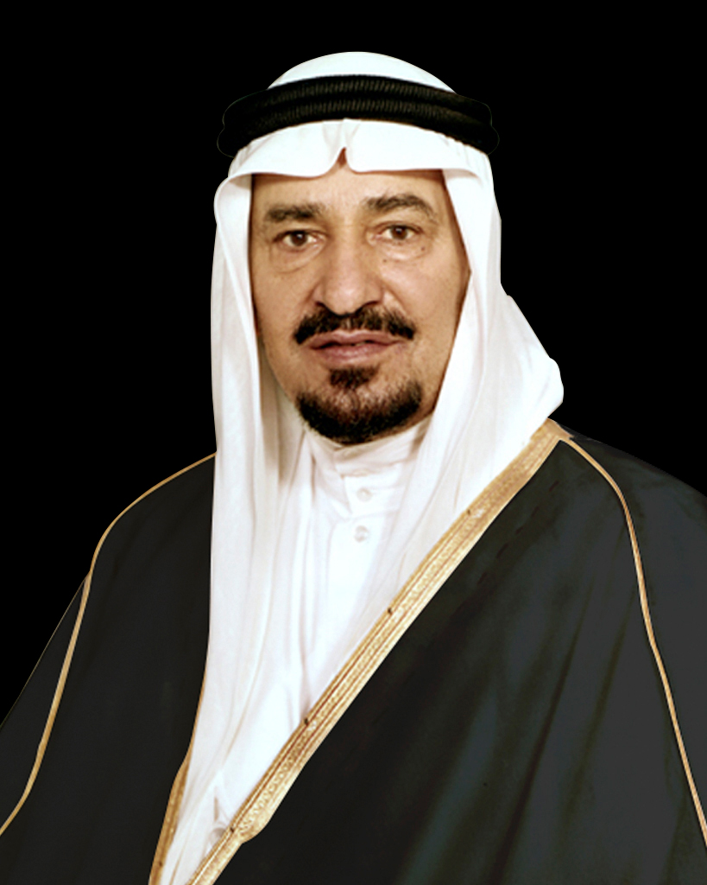

الملك خالد بن عبد العزيز 1395هـ -1402هـ (1975 م – 1982 م)
بويع ملكا على البلاد في عام 1395 هـ (1975م) إثر استشهاد الملك فيصل، ليواصل مسيرة التطور والبناء في المملكة العربية السعودية، حيث شهدت البلاد في عهده تطورا بارزا في مختلف مجالات التنمية، من خلال الاستفادة من الحضارة المدنية مع المحافظة على ثوابت الدولة السعودية ومنهجا الإسلامي المتميز، واستمرت المملكة في عهده تتربع على قمة السياسات العربية والإسلامية؛ لكونها دولة راسخة في قيادتها ومبادئها، وتحتضن الحرمين الشرفين مهوى أفئدة المسلمين.

إنجازات الملك خالد بن عبد العزيز آل سعود في القطاع الصحي
- تقديم الخدمات الصحية والعلاجية والوقائية للشعب السعودي بشكل أفضل وأكثر تطورًا، من خلال استفاداتهم من مزايا التقدم الاجتماعي والاقتصادي في المملكة.
- التوسع في تقديم الخدمات الوقائية والعلاجية في كافة تخصصاتها ولجميع فئات المجتمع، وعلى الصعيد المحلي والعالمي.
- تطور ونمو التعليم الصحي والطبي في عهده، من خلال توصياته لوزارة الصحة بالاهتمام بهذا التعليم، حيث تطورت كليات العلوم الصحية التابعة لوزارة الصحة من خلال إنشاء العديد من المعاهد الموزعة على المملكة، وأُنشأ أول معهد صحي للبنين في الرياض عام 1979م، كما أُنشأ أول معهدين صحيين للبنات عام 1981م، بالإضافة إلى تعزيز التدريب الميداني لمختلف التخصصات الصحية في المراكز والمستشفيات.
- افتتاح العديد من كليات الطب، والمختصة بتعليم مجالات مختلفة من التعليم الصحي، مثل؛ كلية الطب بجامعة الملك سعود، وكلية الطب والعلوم التطبيقية وكلية الطب في جامعة الملك عبد العزيز، بالإضافة إلى كلية الطب في جامعة الملك فيصل، كما وتعزز إيفاد الكوادر الطبية للتدريب في خارج المملكة، لتطوير أساليب وخدمات الرعاية الصحية.
- اعتماد أسلوب الإسعاف الطائر في عام 1980م، والذي بدأ بطائرة واحدة مجهزة بكافة اللوازم الإسعافية لحالات الإخلاء والنداءات العاجلة، ونقلها إلى داخل أو خارج المملكة، بالإضافة إلى دوره في خدمة حجاج بيت الله في مواسم الحج.
إنجازات الملك خالد بن عبد العزيز آل سعود في القطاع التعليمي
- رصد ميزانية عالية لتطوير التعليم، حيث خصصت مبالغ كبيرة لزيادة كفاءة التعليم في المملكة.
- زيادة عدد المدارس في كافة أنحاء المملكة، والذي أدى إلى ازدياد الإقبال على التعليم.
- دعم تعليم الإناث، حيث تساوت أعداد الطالبات بأعداد الطلاب الملتحقين في المدارس تقريبًا.
- افتتاح عددًا من مراكز التدريب المهني في مناطق مختلفة من المملكة.
- تأسيس جامعة الملك فيصل في الدمام والحساء.
إنجازات الملك خالد بن عبد العزيز آل سعود في القطاع الاقتصادي
- تطوير الهيكل التنظيمي لوزارة التجارة من خلال فصلها عن الصناعة والكهرباء.
- إنشاء وكالة الوزارة للشؤون الإدارية والمالية عام 1982م.
- جلب العمالة الوافدة للبلاد وذلك من أجل المساعدة في تنمية ودمج القدرات والمهارات.
- تطور التمويل والتأمين العقاري والخدمات.
- تشجيع التجارة الخارجية، من خلال تمنية الصادرات وإبرام الاتفاقيات مع الدول، وخاصة في عمليات تصدير النفط.